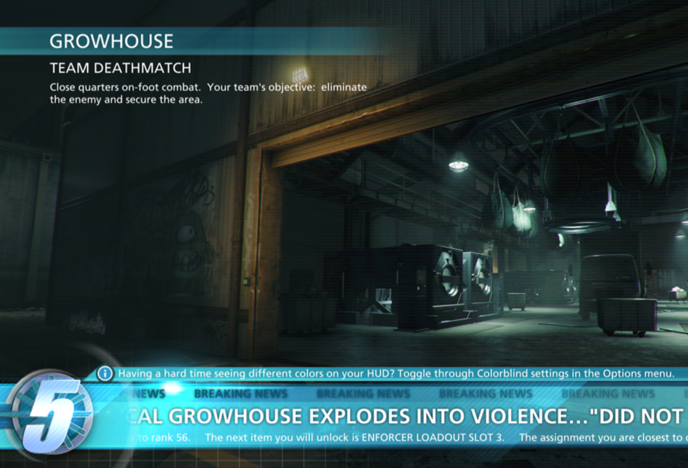

Offrir un large choix de difficultés de jeu
Permettre de modifier le niveau des IA, la vitesse des ennemis, la difficulté des enigmes,.. et eviter
de catégoriser les niveaux de difficultés inférieurs par des termes qui peuvent paraître rabaissant pour
l'utilsateur.
Par exemple, le jeu Shadow of the Tomb Raider permet un choix de difficultés sur plusieurs
élément précis du gameplay.
Afficher les détails des fonctionnalités accessibles du jeu
N'étant pas encore un standard, certains joueurs n'ont pas connaissance des fonctionnalités d'accessibilité présent dans un jeu.
Il est donc nécéssaire de les informer sous forme de menu affiché avant le début du jeu ou bien d'informations lors des écrans de chargement par exemple.
Le jeu Battlefield Harline a par exemple inclut dans l'écran de chargement une information concerant le mode daltonien

Permettre de sauvegarder les paramètres selon plusieurs profils
Plusieurs joueurs peuvent être amener à utiliser une console ou un jeu. Chaque joueur a ses propres besoins et préférences de réglages. Sauvegarder
plusieurs profils est nécessaire pour éviter de devoir modifier ces paramètres à chaque fois.
Certains jeux comme World of Warcraft sauvegarde les préférences de jeu par profils et non par machine.

Permettre de personnaliser l'interface
Permettre de modifier la taille de l'interface
En plus des différences de taille d'écran possible, permettre de modifier la taille d'une interface est essentiel pour les personnes
ayant du mal à voir les petits éléments présents. De plus, certains joueurs préfère rétricir certains éléments pour laisser plus de place au gameplay.
Par exemple, le jeu Street Fighter 5 propose de cacher certains éléments de l'interface de jeu ou de les déplacer.

Permettre d'ajuster la vitesse du jeu
Pouvoir régler la vitesse de jeu est intéréssant pour les personnes agées souhaitant jouer au jeu ou lors de troubles de réactivités.
Voici un exemple de réglage de la vitesse dans le jeu Celeste 3
Permettre de modifier la couleur du texte et le contraste
Les contrastes élévés peuvent poser problèmes aux personnes qui ont certaines formes de dyslexie. Certaines
combinaisons de couleur fonctionnent mieux selon la forme. La meilleure solution est de proposer un choix libre de couleur de texte et de fond.
Surligner les mots importants
Beaucoup de textes peut être difficle à comprendre surtout pour les personnes ayant des difficultés de lecture. Certaines
personnes cherchent également les informations importantes sans lire intégralement le texte. Surligner les mots important est donc nécessaire pour
mettre en évidence les mots clés. De plus il faut éviter de faire des phrases trop longues pour que celle-ci soit facilement compréhensible par le joueur.
Permettre d'activer/désactiver les périphériques haptiques
Les périphériques haptiques sont très utiles en terme d'accessibilité mais peuvent être incomfortable et même causer des douleurs pour certaines personnes.
Il faut donc au minimum permettre au joueur de l'activer/désactiver mais au mieux pouvoir régler l'intensité de celui-ci.
C'est ce que propose par exemple le jeu Forza Horizon 4
Permettre de modifier la taille de la police du texte
Avoir une bonne taille de police par défaut est nécessaire cependant il n'existe aucune taille unique que tout le monde puisse lire. En fonction
des différences au niveau de la taille d'écran ou encore des déficences visuelles, pouvoir choisir une taille de police est beaucoup plus efficace.
C'est ce que propose par exemple, le jeu Warlock of Firetop Mountain. En plus de choisir la taille de police, on peut également modifier l'espacement entre les lignes ce qui améliore la lisibilité du texte.
Garantir la prise en charge du lecteur d'écran et même dans les programmes d'installation
Essentiel pour les personnes aveugles ou malvoyantes, certains types de jeux ne sont pas fait pour y inclure un lecteur d'écran. Cependant les jeux qui sont basé sur du texte, comme Hearthstone
peuvent parfaitement prendre en charge un lecteur d'écran.
Par exemple, le jeu Skullgirls qui est un jeu de combat, propose un gameplay totalement accessible aux personnes aveugles et utilise une librairie appelé Tolk qui redirige le texte vers n'importe qu'elle lecteur d'écran.
Le SDK Xbox permet également d'utiliser une API similiaire pour les systèmes Xbox et Windows.